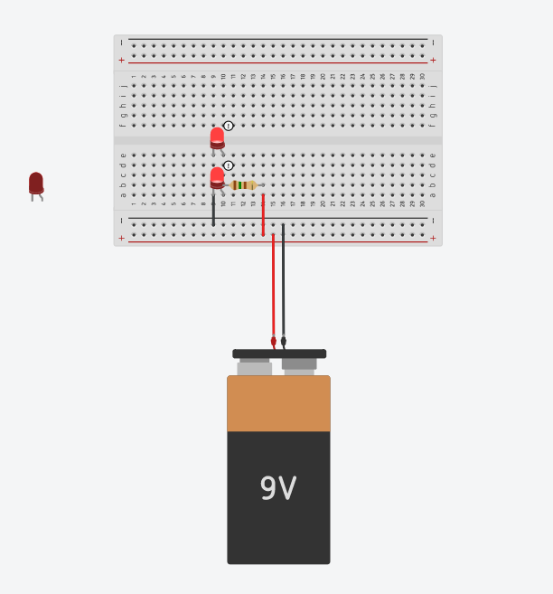

Series VS Parallel Circuits: #
An Intoduction to Breadboards: #
For all the examples below, I am using a breadboard to house my LEDs and complete my circuit, if I was not using a breadboard, I would be using wires to do the same thing. A breadboard is basically a tool in order to simplify a circuit.
A current will always run heightwise(for this example), or along the numbered columns. This rule works for everything but the (-) and (+) terminals, in which current runs lengthwise. These two terminals are also specifically for the (+) and (-) charge specifically, while the numbered rows can be used for either.
Series Circuits #
A series circuit is a circuit that depends on each item in the chain in order for current to flow, making the circuit work.

Should one item in the circuit be removed or fail, then the whole circuit will be disconnected. Should this happen, current will not run through it, resulting in nothing happening when connected to a power source.
For this example, one can see that the circuit is disconnected because, when the LED is taken out, it stops the first LED from connecting to the third LED. The (-) end of the first LED is now only running on column 9, while the (+) end of the third LED is on the 8th column.

Parallel Circuit #
In contrast, a parallel circuit is one that work even if an item is removed. In both situations, the LED lights are the items being removed. In the series circuit, the circuit is broken with the removal of the LED, causing nothing to happen.

For a parallel circuit, when the LED is removed, the circuit is not broken because it is still connected to the other LEDs, thus retaining the property of a complete circuit. For the example below, both (+) end of the LEDs are connected to the power source through column 10, and both (-) ends are connected on column 9, making it a completed circuit.
